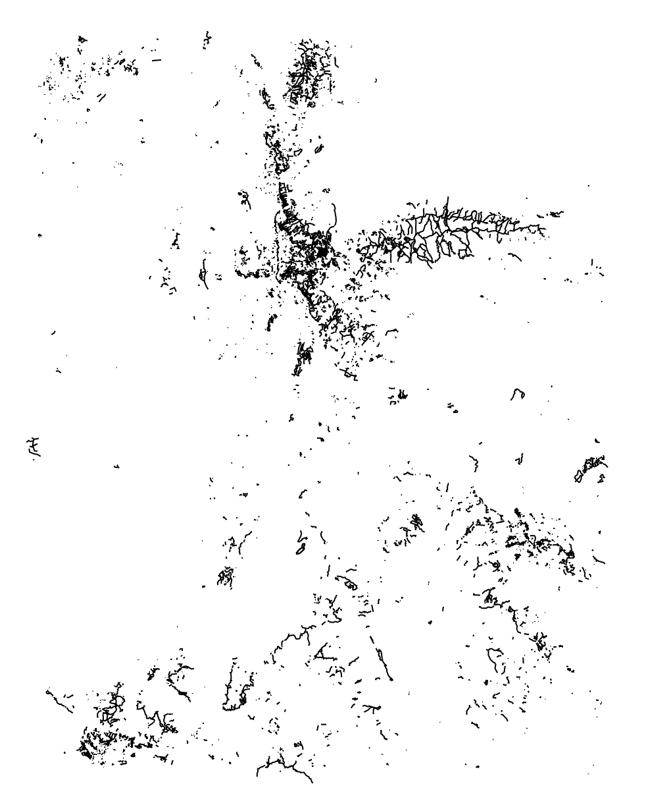
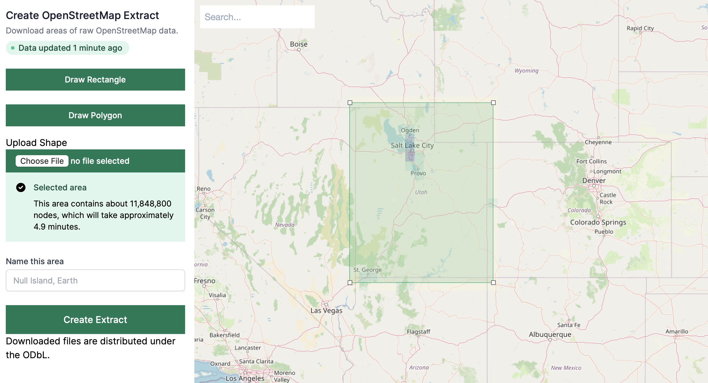
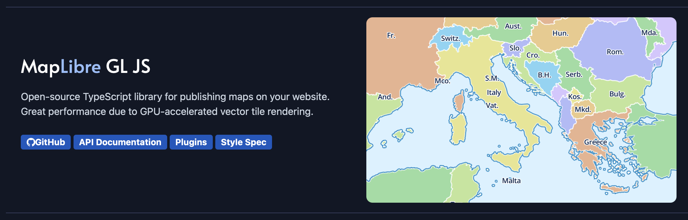
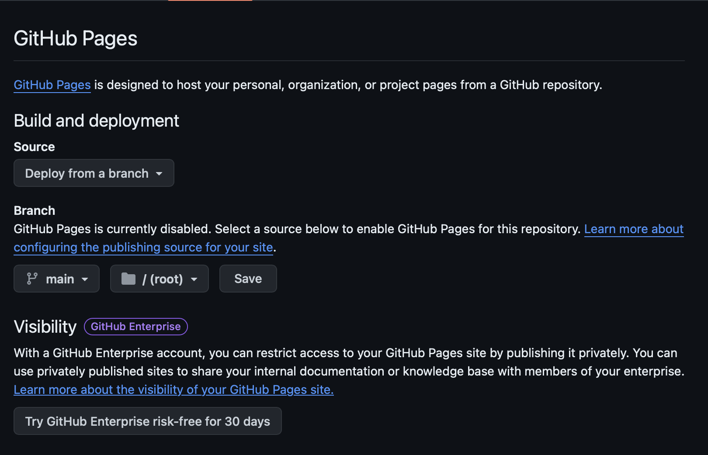
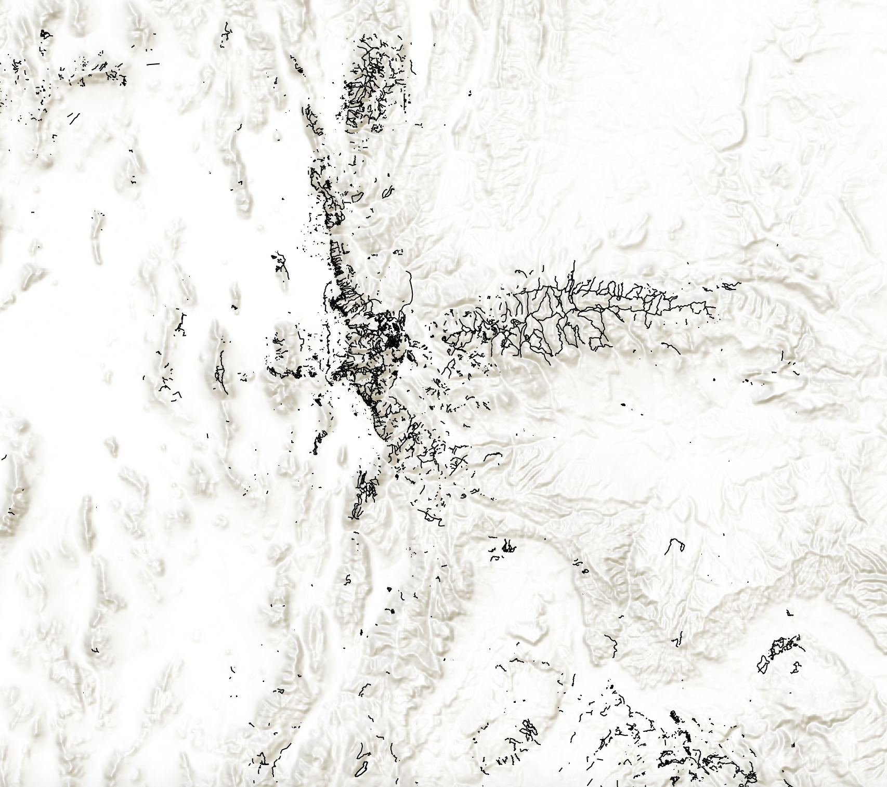

Workshop
Protomaps from the Ground Up
What problem does this solve?
Data freshness
Tons of Tiles
Z/X/Y urls
Downloading them...
Scraping them...
Example Use Cases
by Matt Hampel
by Maryanne Watcher
by Hanbyul Jo
Seoul Building Age
by Hanbyul JoWhat we're making today

What this is
- 100% static site
- Every major part is hosted under our own control
- OSM data liveness and customization
Fork this repo!
github.com/bdon/protomaps-workshop-sotmus24
- Part 1: displaying a Great Outdoors dataset
- Part 2: add a terrain PMTiles
- Part 3: add an OSM basemap
What you need
Highly recommended
Part 1
Acquiring fresh Utah data

osmium tags-filter -o paths.osm.pbf utah.osm.pbf w/highway=path
osmium export paths.osm.pbf -f geojsonseq |
tippecanoe -o utah_highway_path.pmtiles -f
Drag-and-drop inspect
PMTiles viewerDisplaying in MapLibre
- WebGL vector tile, raster and terrain renderer
- FOSS fork of Mapbox GL JS 1.0
Aside: MapLibre vs. Leaflet
- Leaflet: less code weight, no map rotation or fractional zooms
- protomaps-leaflet plugin for vector rendering (we'll skip)
- MapLibre recommended for greenfield projects
MapLibre PMTiles plugin
let protocol = new pmtiles.Protocol();
maplibregl.addProtocol("pmtiles",protocol.tile);
MapLibre PMTiles plugin
sources: {
trails: {
type: "vector",
url: "pmtiles://../utah_highway_path.pmtiles",
attribution: '© OpenStreetMap contributors'
}
},
Let's publish!
Customization
- Change the color of trail paths
- Label the trails differently (trail_visibility)?
- Use a different area
- Use a different tag filter
Part 2
What's our map missing?
- PMTiles is not just for raster data!
- Mapzen Joerd project
- RGB Terrarium format for dynamic client-side hillshading
Using PMTiles CLI
I pre-packaged a PMTiles of Joerd from zooms 0-12
https://r2-public.protomaps.com/protomaps-sample-datasets/terrarium-z12.pmtiles
try using
pmtiles show
Using PMTiles extract
pmtiles extract \ --bbox=-114.111749,36.937896,-108.97866,42.098695 \ https://r2-public.protomaps.com/protomaps-sample-datasets/terrarium-z12.pmtiles \ utah_terrarium.pmtiles
MapLibre PMTiles terrain
terrain: {
type: "raster-dem",
url: "pmtiles://../utah_terrarium.pmtiles",
attribution: '© Joerd',
encoding: 'terrarium'
}
Customization
- Change the area
- Change the hillshade angle
Part 3
What else is missing?
Basemap vs. Overlay distinction
- overlay = application specific data and interactivity
- basemap = necessary context (labels...), eveything else in OSM
Protomaps Basemap
- vector tiles, Zooms 0-15, OSM + Natural Earth
- 5 themes (light, dark, white, grayscale, black)
- Daily build from fresh OSM data
- View at maps.protomaps.com